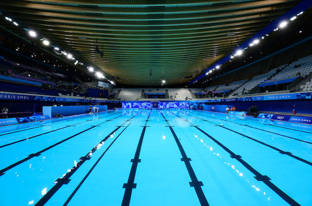
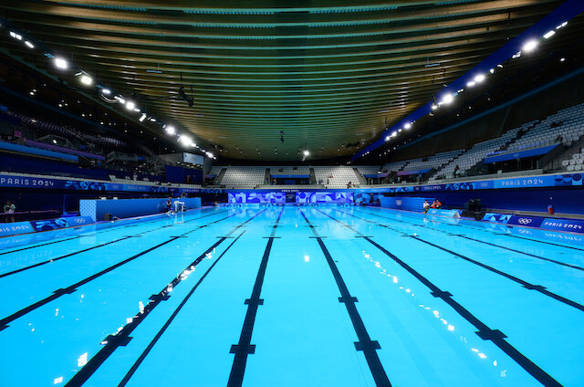

Ласкаво просимо до SwimJournal
Ваш персональний трекер плавання. Фіксуйте результати, стежте за прогресом та досягайте нових цілей.
Розпочати тренування
Чому ми?
- Зручний графік тренувань
- Статистика прогресу
- Особисті нотатки
Ваш персональний трекер плавання. Фіксуйте результати, стежте за прогресом та досягайте нових цілей.
